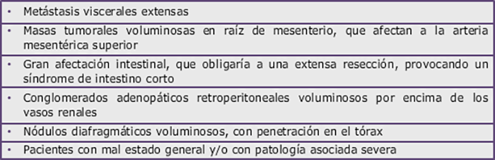
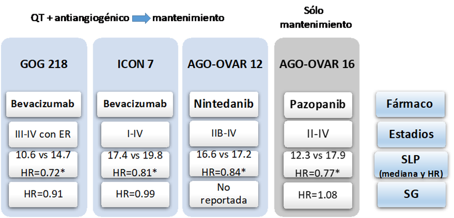

La cirugía del cáncer de ovario avanzado debe tener como objetivo conseguir la citorreducción completa del tumor. Clásicamente, la citorreducción óptima había sido definida como la cirugía que conseguía eliminar todo el tumor o dejar ER menor de 1 cm, mientras que se consideraba cirugía subóptima a aquella en la que persistía enfermedad residual mayor de 1 cm. Sin embargo, en la Conferencia de Consenso del Gynecologic Cancer InterGroup (GCIG) de 2010 se redefinió el concepto de cirugía óptima, pasando a considerarse como la ausencia de enfermedad residual macroscópica, es decir, la citorreducción completa. Esta modificación se realizó porque diferentes series habían mostrado una diferencia muy significativa en supervivencia libre de progresión (SLP) y SG entre las pacientes con citorreducción completa y las que quedaban con ER (siguiente figura).
Supervivencia libre de progresión (izda) y global (dcha) en función de la enfermedad residual tras la cirugía citorreductora (Du Bois et al. Cancer 2009).
Además de la histerectomía, doble anexectomía y omentectomía, la cirugía citorreductora de los estadios avanzados puede requerir diversos procedimientos en función de la extensión tumoral (peritonectomía, resección intestinal, esplecnectomía, hepatectomía parcial, resección diafragmática, etc) con el objetivo conseguir la resección completa. Debido a la complejidad de esta cirugía, debería ser siempre realizada por equipos expertos. La realización de una linfadenectomía pélvica y retroperitoneal sistemática es controvertida. A raíz de los datos publicados en ASCO 2017 del ensayo clínico LION, en los casos con ganglios pélvicos y paraórticos clínicamente negativos, estadios III-IV, en los que se realice citorreducción completa, se podría omitir la linfadenectomía pélvica y paraórtica (Harter P et al. J Clin Oncol 35, 2017 (suppl; abstr 5500).
Se denomina citorreducción primaria cuando la cirugía se plantea como tratamiento inicial de la enfermedad, y cirugía de intervalo cuando se realiza tras una quimioterapia neoadyuvante.
Se han publicado diversos estudios que han evaluado diferentes aproximaciones para intentar predecir la posibilidad de una citorreducción completa. Las diferentes pruebas de imagen (TC, PET-TC, RM) y el marcador CA 125 no son lo suficientemente precisos para este fin. La evaluación de la extensión tumoral por laparoscopia tiene un mejor valor predictivo. En este sentido se han definido diferentes índices o scores, siendo el de Fagotti-modificado y el de PCI (Peritoneal Carcinomatosis Index) los que parecen asociarase con una myor capacidad predictiva de citorreducción completa. Aunque la evaluación de la resecabilidad se realice por laparoscopia, en caso de que fuera factible, la citorreducción de la enfermedad avanzada se recomienda realizarla por laparotomía.
La citorreducción primaria es el procedimiento quirúrgico de elección recomendado por los principales expertos. En determinadas situaciones, cuando la enfermedad se considera irresecable de entrada o el estado general del paciente no permite un tratamiento quirúrgico agresivo, se opta por iniciar un tratamiento sistémico con intención neoadyuvante y plantear el procedimiento quirúrgico tras 3 ciclos, nuevamente con el objetivo de conseguir una citorreducción completa. Aunque tres ensayos clínicos randomizados han mostrado que las enfermas con una cirugía de intervalo tras una quimioterapia neoadyuvante tienen una SLP y una SG similar a las que son operadas de entrada, estos estudios han sido muy criticados por el bajo porcentaje de citorreducción óptima y por unos tiempos quirúrgicos demasiado cortos. Por otro lado, diversas publicaciones han mostrado que las pacientes con citorreducción completa tras una cirugía de inicio tienen una mayor SG que las que consiguen una citorreducción completa tras cirugía de intervalo. Por ello, en la mayoría de centros expertos en cáncer de ovario sólo se plantea una quimioterapia neoadyuvante en las circunstancias descritas en la siguiente tabla. Hay que evitar realizar la cirugía de intervalo tras más de 4 ciclos de neoadyuvancia porque tiene un efecto detrimental en la supervivencia.
Indicaciones de quimioterapia neoadyuvante en el cáncer de ovario avanzado.
Desde hace casi dos décadas, el tratamiento sistémico estándar de primera línea en el cáncer de ovario avanzado debe incluir una combinación de platino y taxano. Inicialmente, se utilizó el esquema cisplatino-paclitaxel intravenoso, tras demostrarse su superioridad frente a la combinación cisplatino-ciclofosfamida. Posteriormente, se observó que el esquema carboplatino-paclitaxel tenía una eficacia similar a cisplatino-paclitaxel, pero con una menor toxicidad. En los esquemas iniciales la infusión de paclitaxel se realizaba en 24 horas. Estudios posteriores mostraron que la administración en 3 horas era menos tóxica y más cómoda. Por tanto, el esquema de referencia desde hace más 15 años es la combinación de paclitaxel a dosis de 175 mg/m2 y carboplatino AUC 5-6.
Posteriormente, se realizaron sendos estudios randomizados en los que se comparó el esquema estándar frente a la combinación carboplatino-docetaxel o carboplatino-doxorrubicina liposomal pegilada (DLP), mostrando una similar eficacia. Por tanto, estas últimas combinaciones de carboplatino podrían ser una alternativa de tratamiento para pacientes que por algún motivo no pudieran recibir paclitaxel. Los ensayos que evaluaron los tripletes o dobletes secuenciales no mostraron ningún beneficio frente a carboplatino-paclitaxel.
Más recientemente, un estudio del grupo japonés de cáncer ginecológico mostró que la administración de paclitaxel en pauta semanal (a dosis de 80 mg/m2/semana) mejoraba la SLP y SG frente a la clásica administración trisemanal, a expensas de una mayor toxicidad hematológica. Sin embargo, otros estudios posteriores realizados en población caucásica (MITO 7, GOG 262 o ICON 8) no han podido confirmar la superioridad de la pauta semanal (o dosis densas), por lo que la administración trisemanal sigue siendo la recomendada (al menos en población caucásica).
Otra modalidad de tratamiento ampliamente estudiada ha sido la administración de quimioterapia por vía intraperitoneal, con la justificación de que el cisplatino y el paclitaxel difunden desde la cavidad peritoneal hasta el tumor, consiguiéndose concentraciones del fármaco a nivel peritoneal muy superiores a las que se obtienen tras una administración intravenosa. Además, la concentración de estos fármacos en sangre es similar a la obtenida tras la infusión intravenosa. En los diferentes estudios realizados, esta modialidad terapéutica se ha limitado a pacientes con citorreducción completa o con ER < 1 cm, debido a que la quimioterapia intraperitoneal no penetra adecudamente en residuos tumorales de mayor tamaño.
Los resultados de tres ensayos fase III (que se muestran en la siguiente tabla) y un meta-análisis han demostrado que la infusión de parte de la quimioterapia por vía intraperitoneal tras una cirugía citorreductora inicial consigue un claro beneficio en SLP y SG, aunque a expensas de una mayor toxicidad. Por ello, es una opción recomendada en pacientes con buen estado general, sin comorbilidad importante, y con cáncer de ovario en estadio III sin ER mayor de 1 cm tras citorreducción inicial. Una reciente actualización en la que se analizaban los resultados a largo plazo de dos de estos ensayos, mostró que tras 10 años de seguimiento se seguía mantenimiento el beneficio de la quimioterapia intraperitoneal (con un incremento de la mediana de SG de aproximadamente 10 meses). Además, este beneficio era superior en aquellas pacientes que conseguían finalizar los 6 ciclos de tratamiento por vía intraperitoneal.
El esquema más utilizado es una modificación del GOG 172: paclitaxel 175 mg/m2 día 1, cisplatino 75-100 mg/m2 día 2, y paclitaxel 60 mg/m2 día 8. Para minimizar la toxicidad se debe pautar un adecuado tratamiento de soporte (antiemesis, hidratación, analgesia, etc). Por otro lado, se recomienda utilizar catéteres intraperitoneales tipo port-a-cath, y su inserción al final de la cirugía citorreductora, para disminuir las complicaciones asociadas al mismo.
Principales ensayos fase III de quimioterapia intraperitoneal adyuvante en cáncer de ovario.
Recientemente se han comunicado los resultados premilinares del ensayo GOG 252, en el que se comparaban tres brazos de tratamiento: dos con quimioterapia intraperitoneal (uno con cisplatino y otro con carboplatino) y uno con intravenosa con administración semanal de paclitaxel. Los tres brazos incorporaron bevacizumab. El estudio fue negativo, sin observarse diferencias en la SLP. Modificaciones en la dosificación y posología del brazo de cisplatino frente al esquema descrito en el GOG 172, la inclusión de estadios II y estadios IV, y la adición de bevacizumab en los tres brazos pudo contribuir a que los brazos de intraperitoneal no fueran superiores al de intravenosa. Aunque este estudio aún no ha sido publicado, los resultados han puesto en cuestión el posible beneficio de la quimioterapia intraperitoneal, al menos cuando se compara con una quimioterapia intravenosa con bevacizumab. Lo que parece evidente es que no sería justificable añadir bevacizumab al esquema de quimioterapia intraperitoneal.
Otro estudio randomizado comunicado en los últimos años ha sido el OV 21, que evaluaba la administración de quimioterapia intraperitoneal frente a intravenosa tras quimioterapia neoadyuvante y cirugía de intervalo. Aunque es un estudio con un diseño muy criticado, parece que la quimioterapia intraperitoneal tras cirugía de intervalo también podría ofrecer un cierto beneficio, al menos en SLP, por lo que podría ser una opción para pacientes seleccionadas.
Además de las potenciales ventajas de la administración de quimioterapia intraperitoneal, explicadas en el epígrafe anterior, se cree que la hipetermia incrementa la penetración de la quimioterapia en el peritoneo, aumento su sensibilidad al producir un daño en la reparación del ADN.
En un estudio fase III publicado por van Driel et al, realizado en pacientes con estadio III después de 3 ciclos de quimioterapia neoadyuvante, la aplicación de HIPEC tras la cirugía de intervalo se asoció a una mejor SLP y SG. Sin embargo, ha sido un estudio muy criticado por diversos motivos, entre ellos, no haber considerado factores pronósticos importantes, como el estado de la mutación BRCA o la respuesta a la quimioterapia neoadyuvante, y por existir un mal equilibrio entre los subtipos histológicos (con más histologías con pronóstico desfavorable en el grupo sin HIPEC). Otro ensayo clínico randomizado que evaluó el papel de la HIPEC, en el que se incluyeron tanto pacientes con citorreducción primaria como con cirugía de intervalo, no mostró diferencias en SLP ni SG.
Actualmente existe una gran controversia acerca del beneficio real que puede aportar el HIPEC en cáncer de ovario, por lo que la mayoría de expertos considera que su utilización no puede considerarse estándar, y que hasta que estén disponibles los resultados de otros estudios en marcha, sólo debería plantearse dentro de ensayos clínicos.
En los últimos años se han desarrollado diferentes fármacos dirigidos a la inhibición de la angiogénesis, proceso que tiene un papel fundamental en la progresión tumoral del cáncer de ovario. De todas las terapias estudiadas, sólo bevacizumab ha llegado a ser aprobado por las agencias reguladoras. Bevaicuzmab es un anticuerpo monoclonal humanizado dirigido contra el factor de crecimiento endotelial vascular (VEGF), que impide la unión a su receptor y con ello el inicio de la cascada pro- angiogénica.
La eficacia de bevacizumab como tratamiento en primera línea en combinación con la quimioterapia estándar fue analizada en dos estudios fase III, GOG 218 e ICON 7, cuyos resultados se resumen en la siguiente figura, junto con los del resto de estudios con antiangiogénicos. El ensayo GOG 218 es un estudio de tres brazos que evaluó la adición de bevacizumab al régimen de quimioterapia estándar y su posterior mantenimiento en pacientes con cáncer de ovario avanzado con enfermedad residual tras la cirugía. Los resultados mostraron una mejoría en la SLP de forma estadísticamente significativa a favor del brazo que incorporaba bevacizumab en combinación con quimioterapia y como mantenimiento posterior. Sin embargo, no hubo diferencias en SG. El ensayo ICON 7 tenía un diseño similar al anterior pero con solo dos brazos, e incluyéndose en este caso pacientes tanto con estadios avanzados como iniciales. De nuevo, se observó un incremento de la SLP en la rama de combinación con bevacizumab, sin diferencias en SG. En el subgrupo de pacientes de mal pronóstico (estadio IV o ER > 1 cm) el beneficio en SLP fue más acusado y en ellos sí se observó un impacto estadísticamente significativo en SG (con un incremento de la mediana de aproximadamente de 9 meses). En base a estos dos estudios bevacizumab fue aprobado por las agencias reguladoras para el tratamiento del cáncer de ovario avanzado en combinación con la quimioterapia estándar de primera línea, y como mantenimiento posterior durante un total de 15 meses. Aunque la dosis aprobada fue de 15 mg/Kg cada 3 semanas, dado que en el estudio ICON 7 se utilizó la dosis de 7.5 mg/Kg cada 3 semanas, ambas dosificaciones se consideran adecuadas.
En esta misma línea, se han estudiado otros dos fármacos antiangiogénicos inhibidores de tirosina-quinasa, el nintedanib y el pazopanib, que a pesar del beneficio en SLP, como se explica en la siguiente figura, no mostraron beneficio en SG, además de una mayor tasa de efectos secundarios que el bevacizumab. Por este motivo, los laboratorios responsables de su desarrollo no consideraron presentar estos dos fármacos a las agencias reguladoras para su aprobación.
Resumen de los resultados de los ensayos fase III realizados con antiangiogenicos en primera línea (*p < 0.05).
La hormonoterapia es poco utilizada en el cáncer de ovario, aunque aproximadamente un 20% de pacientes con recaída pueden conseguir respuestas con tamoxifeno, la mayoría de corta duración. Sin embargo, recientemente se han comunicado estudios que indican que el subtipo LGSC podría ser especialmente sensible a la hormonoterapia, incluso más que a la quimioterapia. Un estudio retrospectivo realizado en pacientes con este subtipo histológico en estadios II, III y IV ha mostrado que el tratamiento de mantenimiento con hormonoterapia (tras una cirugía y quimioterapia adyuvante) incrementa la SLP de manera muy significativa. Por ello, en el tratamiento inicial del LGSC avanzado la administración de hormonoterapia debe ser considerada tras la cirugía y la quimioterapia (o tras la cirugía cuando no se considere la administración de quimioterapia). Se desconoce cuál debe ser la duración más adecuada de este tratamiento.
Los inhibidores de PARP (enzima poli ADP ribosa polimerasa) son fármacos que pueden inducir el mecanismo de letalidad sintética en tumores con deficiencia de recombinación homóloga (HRD), como ocurre en las pacientes con mutación en los genes BRCA1/2. Sin embargo, como veremos más adelante, también los pacientes sin HRD se benefician de este tratamiento.
En el ensayo clínico fase III SOLO-1, recientemente publicado por Moore et al, se comparó el tratamiento de mantenimiento con olaparib versus placebo (2:1), en pacientes con cáncer de ovario seroso o endometrioide alto grado en estadios III o IV y con mutación en BRCA, que habían presentado respuesta (parcial o completa) a una primera línea de tratamiento con platino. La duración del mantenimiento dentro del ensayo fue de 2 años, pero para las pacientes que no alcaban una respuesta completa tras la quimioterapia se permitió continuar hasta progresión. Se observó un incremento significativo y clínicamente muy relevante de la SLP, de manera que a los 3 años el 60% de las pacientes estaba libre de progresión en el brazo de olaparib versus al 27% de las pacientes en tratamiento con placebo. A raíz de estos resultados y a la espera de la aprobación por las agencias reguladoras, el mantenimiento con olaparib pasará ser un nuevo estándar de tratamiento en las pacientes recién diagnosticadas de cáncer de ovario con mutación en BRCA y con respuesta parcial o completa al tratamiento con platino.
Actualmente, hay dos ensayos clínicos pendientes de resultado con un inhibidor de PARP como tratamiento de mantenimiento en primera línea, uno de ellos el PRIMA está evaluando la actividad de niraparib, en pacientes con y sin mutación de BRCA, y el estudio PAOLA-1, que determinará el papel de la combinación de olaparib con bevacizumab en pacientes con y sin mutacion de BRCA. Además, en 2019 se iniciará el reclutamiento de varios estudios en 1ª línea con la combinación de inhibidores de PARP, bevacizumab e inmunoterapia.